Modelo de Crédito Parcial
Estimación de umbrales del PCM
Los parámetros del PCM para el constructo Metodología mostraron umbrales ordenados en todos los ítems, lo que respalda el funcionamiento progresivo de las categorías de respuesta. Los reactivos cubren un rango amplio del rasgo latente, desde niveles bajos hasta niveles altos de habilidad metodológica. No obstante, algunos ítems, particularmente los ítems 29, 33 y 36, presentan umbrales superiores elevados, lo que sugiere que las categorías más altas requieren niveles importantes del rasgo.
| a | b1 | b2 | b3 | b4 | Item |
|---|---|---|---|---|---|
| 1 | -3.826 | 0.239 | 3.235 | 5.373 | Item16 |
| 1 | -3.338 | 0.523 | 3.223 | 5.925 | Item17 |
| 1 | -2.809 | 1.113 | 3.598 | 5.963 | Item18 |
| 1 | -3.269 | 0.313 | 3.183 | 5.644 | Item19 |
| 1 | -3.573 | -0.231 | 2.267 | 4.796 | Item20 |
| 1 | -3.058 | 0.429 | 2.768 | 5.104 | Item21 |
| 1 | -2.861 | 0.859 | 3.290 | 5.593 | Item22 |
| 1 | -3.416 | -0.049 | 2.596 | 5.168 | Item23 |
| 1 | -4.340 | -0.439 | 2.742 | 4.514 | Item24 |
| 1 | -4.288 | -0.254 | 2.940 | 4.726 | Item25 |
| 1 | -4.222 | -0.196 | 2.597 | 4.999 | Item26 |
| 1 | -3.427 | 0.236 | 3.069 | 5.550 | Item27 |
| 1 | -4.068 | -0.070 | 2.658 | 5.446 | Item28 |
| 1 | -1.825 | 2.123 | 4.129 | 6.788 | Item29 |
| 1 | -3.422 | 0.414 | 3.195 | 5.505 | Item30 |
| 1 | -2.892 | 0.766 | 3.634 | 6.161 | Item31 |
| 1 | -3.676 | 0.415 | 3.218 | 4.681 | Item32 |
| 1 | -1.455 | 1.883 | 3.307 | 6.445 | Item33 |
| 1 | -2.174 | 1.201 | 3.067 | 5.280 | Item34 |
| 1 | -2.016 | 1.280 | 3.077 | 5.512 | Item35 |
| 1 | -1.802 | 1.822 | 3.810 | 6.568 | Item36 |
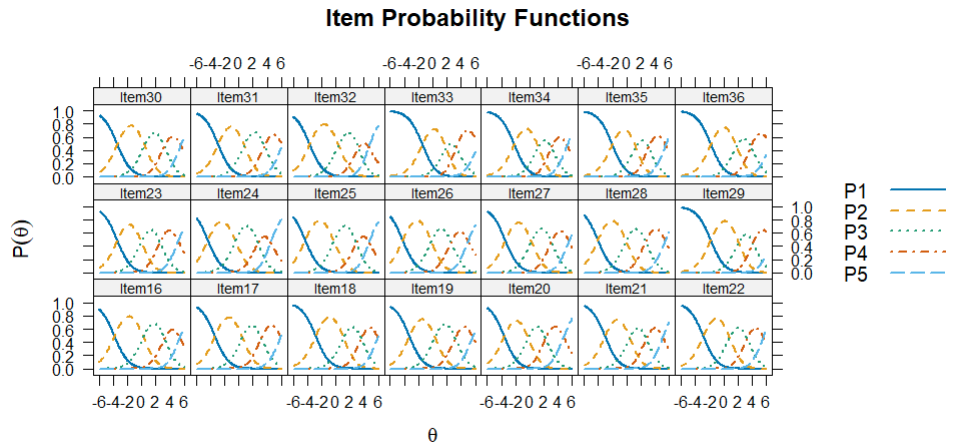
Retrotraducción factorial del PCM
La retrotraducción factorial del PCM mostró comunalidades elevadas y homogéneas en todos los ítems (h² = .921), lo que sugiere una fuerte relación de los reactivos con el rasgo latente de Metodología. No obstante, esta igualdad responde a la restricción del modelo Rasch/PCM, por lo que la interpretación debe complementarse con modelos que permitan discriminaciones diferenciadas.
Modelo de Crédito Parcial Generalizado
Estimación de parámetros del GPCM
Los parámetros del GPCM para el constructo Metodología mostraron discriminaciones diferenciadas entre los ítems (a = 1.514–3.069), con mayor capacidad discriminativa en los ítems 22, 26, 18, 27, 19 y 21. Los umbrales se organizaron progresivamente en todos los reactivos, lo que respalda el funcionamiento ordinal de las categorías de respuesta. En conjunto, los resultados sugieren que los ítems permiten distinguir distintos niveles de habilidad metodológica, aunque algunos reactivos, como los ítems 29 y 33, aportan menor discriminación relativa.
| a | b1 | b2 | b3 | b4 | Item |
|---|---|---|---|---|---|
| 2.167 | -1.705 | 0.111 | 1.454 | 2.456 | Item16 |
| 2.660 | -1.414 | 0.223 | 1.381 | 2.622 | Item17 |
| 2.929 | -1.162 | 0.458 | 1.519 | 2.623 | Item18 |
| 2.866 | -1.368 | 0.134 | 1.338 | 2.468 | Item19 |
| 2.120 | -1.597 | -0.098 | 1.020 | 2.187 | Item20 |
| 2.858 | -1.281 | 0.177 | 1.174 | 2.220 | Item21 |
| 3.069 | -1.177 | 0.350 | 1.376 | 2.433 | Item22 |
| 2.266 | -1.503 | -0.018 | 1.151 | 2.333 | Item23 |
| 2.433 | -1.884 | -0.186 | 1.190 | 2.012 | Item24 |
| 2.059 | -1.941 | -0.110 | 1.343 | 2.162 | Item25 |
| 2.997 | -1.752 | -0.084 | 1.083 | 2.151 | Item26 |
| 2.912 | -1.430 | 0.100 | 1.287 | 2.416 | Item27 |
| 2.442 | -1.761 | -0.029 | 1.159 | 2.426 | Item28 |
| 1.518 | -0.914 | 1.112 | 2.015 | 3.451 | Item29 |
| 2.388 | -1.487 | 0.183 | 1.400 | 2.478 | Item30 |
| 2.737 | -1.218 | 0.326 | 1.546 | 2.734 | Item31 |
| 2.007 | -1.675 | 0.197 | 1.480 | 2.145 | Item32 |
| 1.514 | -0.705 | 0.986 | 1.562 | 3.290 | Item33 |
| 1.793 | -1.014 | 0.585 | 1.428 | 2.499 | Item34 |
| 1.866 | -0.928 | 0.612 | 1.417 | 2.600 | Item35 |
| 2.293 | -0.789 | 0.805 | 1.696 | 3.017 | Item36 |
Las curvas características del ítem del GPCM para el constructo Metodología evidencian un funcionamiento progresivo de las categorías de respuesta. Las categorías inferiores predominan en niveles bajos del rasgo latente, mientras que las categorías intermedias y superiores se activan conforme aumenta θ. Las curvas más pronunciadas en ítems como 18, 21, 22, 26 y 27 reflejan mayor capacidad discriminativa, mientras que los ítems 29, 33, 34 y 35 presentan transiciones más amplias, asociadas con menor discriminación relativa. En conjunto, los resultados respaldan la coherencia ordinal de los reactivos y muestran que el GPCM permite captar diferencias en la capacidad discriminativa de los ítems del constructo Metodología.
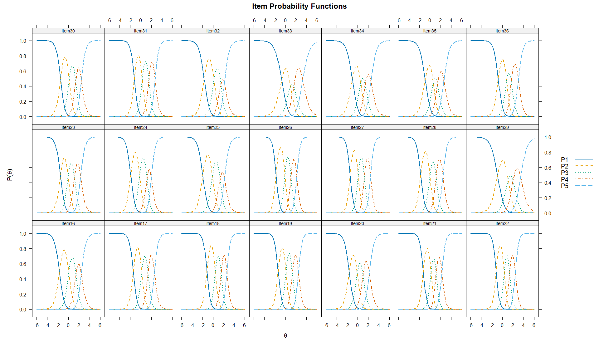
Retrotraducción factorial del Modelo GPCM
La retrotraducción factorial del GPCM para el constructo Metodología mostró cargas factoriales elevadas en todos los ítems (λ = .918–.978), lo que indica una asociación fuerte y consistente de los reactivos con el factor latente. Asimismo, las comunalidades fueron altas (h² = .843–.957), lo que sugiere que una proporción importante de la varianza de cada reactivo es explicada por el constructo. Los ítems con mayores cargas fueron Item22 (λ = .978), Item26 (λ = .977), Item18 y Item27 (λ = .976), mientras que los ítems 29 y 33 presentaron las cargas más bajas relativas (λ = .919 y λ = .918, respectivamente), aunque todavía en rangos claramente adecuados. En conjunto, los resultados respaldan una estructura unidimensional fuerte y coherente para el constructo Metodología bajo el GPCM.
| Item | F1 | h2 |
|---|---|---|
| Item16 | 0.958 | 0.917 |
| Item17 | 0.971 | 0.943 |
| Item18 | 0.976 | 0.953 |
| Item19 | 0.975 | 0.951 |
| Item20 | 0.956 | 0.914 |
| Item21 | 0.975 | 0.950 |
| Item22 | 0.978 | 0.957 |
| Item23 | 0.961 | 0.924 |
| Item24 | 0.966 | 0.933 |
| Item25 | 0.953 | 0.909 |
| Item26 | 0.977 | 0.955 |
| Item27 | 0.976 | 0.952 |
| Item28 | 0.966 | 0.933 |
| Item29 | 0.919 | 0.844 |
| Item30 | 0.965 | 0.931 |
| Item31 | 0.973 | 0.946 |
| Item32 | 0.951 | 0.904 |
| Item33 | 0.918 | 0.843 |
| Item34 | 0.940 | 0.883 |
| Item35 | 0.944 | 0.891 |
| Item36 | 0.962 | 0.925 |
Modelo de Respuesta Graduada
Estimación de parámetros del GRM
Los parámetros del GRM para el constructo Metodología mostraron discriminaciones elevadas en todos los ítems (a = 1.924–3.371), lo que indica que los reactivos contribuyen adecuadamente a diferenciar niveles del rasgo latente. Los ítems con mayor capacidad discriminativa fueron Item22 (a = 3.371), Item26 (a = 3.346), Item18 (a = 3.308), Item27 (a = 3.271), Item21 (a = 3.218) e Item19 (a = 3.187), mientras que los ítems 29 (a = 1.924) y 33 (a = 2.026) presentaron menor discriminación relativa, aunque todavía en rangos adecuados. Los umbrales se organizaron progresivamente en todos los reactivos, lo que respalda el funcionamiento ordinal de las categorías de respuesta. En conjunto, el GRM sugiere que los ítems del constructo Metodología funcionan de manera coherente y permiten distinguir distintos niveles de habilidad metodológica, especialmente en los niveles intermedios y altos del continuo latente.
| a | b1 | b2 | b3 | b4 | Item |
|---|---|---|---|---|---|
| 2.559 | -1.652 | 0.058 | 1.455 | 2.683 | Item16 |
| 2.996 | -1.388 | 0.179 | 1.408 | 2.765 | Item17 |
| 3.308 | -1.144 | 0.414 | 1.529 | 2.783 | Item18 |
| 3.187 | -1.345 | 0.098 | 1.353 | 2.631 | Item19 |
| 2.612 | -1.559 | -0.132 | 1.035 | 2.319 | Item20 |
| 3.218 | -1.265 | 0.139 | 1.212 | 2.370 | Item21 |
| 3.371 | -1.166 | 0.309 | 1.428 | 2.598 | Item22 |
| 2.730 | -1.477 | -0.055 | 1.154 | 2.462 | Item23 |
| 2.793 | -1.819 | -0.210 | 1.165 | 2.217 | Item24 |
| 2.434 | -1.873 | -0.143 | 1.320 | 2.433 | Item25 |
| 3.346 | -1.698 | -0.117 | 1.088 | 2.282 | Item26 |
| 3.271 | -1.402 | 0.066 | 1.295 | 2.565 | Item27 |
| 2.782 | -1.716 | -0.070 | 1.181 | 2.561 | Item28 |
| 1.924 | -0.914 | 0.941 | 2.207 | 3.820 | Item29 |
| 2.765 | -1.452 | 0.139 | 1.421 | 2.669 | Item30 |
| 3.106 | -1.202 | 0.290 | 1.571 | 2.887 | Item31 |
| 2.453 | -1.608 | 0.144 | 1.469 | 2.452 | Item32 |
| 2.026 | -0.748 | 0.811 | 1.805 | 3.411 | Item33 |
| 2.357 | -1.010 | 0.464 | 1.502 | 2.693 | Item34 |
| 2.472 | -0.926 | 0.498 | 1.495 | 2.749 | Item35 |
| 2.699 | -0.802 | 0.731 | 1.835 | 3.165 | Item36 |
Las curvas características de categoría del constructo Metodología muestran, en general, un funcionamiento adecuado de los reactivos. En la mayoría de los ítems, las cinco categorías de respuesta aparecen ordenadas secuencialmente sobre el continuo de habilidad (), lo que indica que, conforme aumenta el nivel del rasgo latente, también aumenta la probabilidad de elegir categorías más altas. Las categorías extremas funcionan como se espera: la categoría 1 predomina en niveles bajos de , mientras que la categoría 5 se vuelve más probable en niveles altos. Asimismo, las categorías intermedias presentan picos definidos y transiciones relativamente claras, lo que sugiere una diferenciación adecuada entre niveles sucesivos del rasgo. En conjunto, las curvas evidencian que los ítems discriminan principalmente en los niveles bajos, medios y medio-altos del continuo latente. No obstante, algunos reactivos, como Item29 y en menor medida Item33, muestran curvas más amplias y algo más solapadas, lo que sugiere una discriminación relativamente menor en comparación con el resto. Aun así, el patrón global respalda un funcionamiento satisfactorio de las categorías de respuesta en el constructo.
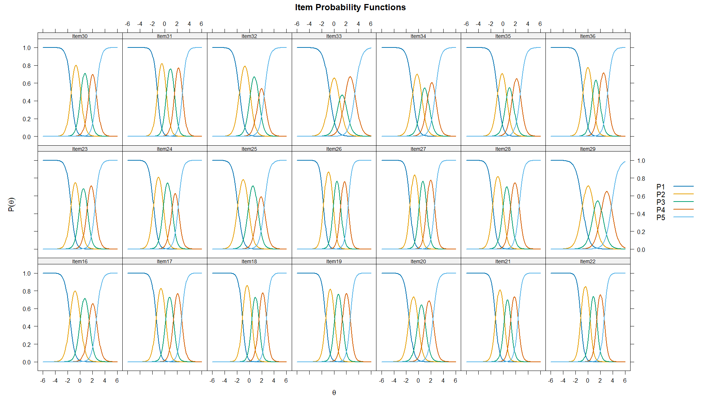
Retrotraducción factorial del GRM
La retrotraducción factorial del GRM para el constructo Metodología mostró cargas factoriales altas en todos los ítems (λ = .749–.893), lo que indica una asociación consistente de los reactivos con el factor latente. Asimismo, las comunalidades fueron adecuadas y elevadas (h² = .561–.797), lo que sugiere que el constructo explica una proporción importante de la varianza de cada reactivo. Los ítems con mayores cargas fueron Item22 (λ = .893), Item26 (λ = .891), Item18 (λ = .889), Item27 (λ = .887) e Item21 (λ = .884), mientras que los ítems 29 (λ = .749; h² = .561) y 33 (λ = .766; h² = .586) presentaron los valores más bajos relativos, aunque todavía dentro de rangos adecuados. En conjunto, estos resultados respaldan una estructura predominantemente unidimensional y coherente para el constructo Metodología bajo el GRM.
| Item | F1 | h2 |
|---|---|---|
| Item16 | 0.833 | 0.693 |
| Item17 | 0.869 | 0.756 |
| Item18 | 0.889 | 0.791 |
| Item19 | 0.882 | 0.778 |
| Item20 | 0.838 | 0.702 |
| Item21 | 0.884 | 0.781 |
| Item22 | 0.893 | 0.797 |
| Item23 | 0.849 | 0.720 |
| Item24 | 0.854 | 0.729 |
| Item25 | 0.820 | 0.672 |
| Item26 | 0.891 | 0.794 |
| Item27 | 0.887 | 0.787 |
| Item28 | 0.853 | 0.728 |
| Item29 | 0.749 | 0.561 |
| Item30 | 0.852 | 0.725 |
| Item31 | 0.877 | 0.769 |
| Item32 | 0.822 | 0.675 |
| Item33 | 0.766 | 0.586 |
| Item34 | 0.811 | 0.657 |
| Item35 | 0.824 | 0.678 |
| Item36 | 0.846 | 0.716 |
Unidimensionalidad del constructo mediante AFC
La unidimensionalidad del constructo Metodología se evaluó inicialmente mediante AFC ordinal con estimador WLSMV. El modelo unidimensional mostró un ajuste aceptable en términos residuales, con un SRMR = .075, valor inferior al punto de referencia convencional de .08, lo que sugiere una discrepancia residual baja-moderada entre la matriz observada y la matriz reproducida por el modelo. En este sentido, el SRMR aporta evidencia favorable para sostener una unidimensionalidad esencial del constructo. Asimismo, los índices incrementales fueron aceptables en su versión escalada (CFI = .935; TLI = .927), aunque menores a los observados en otros constructos. Las cargas factoriales estandarizadas fueron altas en todos los ítems (λ = .728–.923), lo que indica que los reactivos se asocian de manera clara con el factor latente de Metodología. No obstante, el RMSEA fue elevado tanto en su versión estándar como escalada, por lo que el ajuste global no puede considerarse plenamente satisfactorio. En conjunto, los resultados respaldan una estructura predominantemente unidimensional y suficientemente defendible para continuar con el análisis TRI, aunque también sugieren la posible presencia de asociaciones residuales o subcomponentes internos dentro del constructo. Los índices de modificación del AFC sugieren la presencia de asociaciones residuales relevantes entre algunos pares de ítems. Estos resultados no invalidan la unidimensionalidad esencial, pero sí justifican explorar posteriormente un modelo alternativo
Los índices de ajuste TRI mediante M2 mostraron resultados mixtos para el constructo Metodología. Los modelos flexibles GPCM y GRM presentaron mejor ajuste residual que el PCM, ambos con SRMSR = .060, frente a .075 del PCM. El GPCM mostró el CFI más alto (.947) y un RMSEA ligeramente menor que el GRM, lo que sugiere un ajuste residual marginalmente más favorable. Sin embargo, los criterios de información favorecieron claramente al GRM, al presentar los valores más bajos de AIC, SABIC y BIC, además del mayor logLik. En conjunto, aunque el GPCM mostró un ajuste residual ligeramente superior, los criterios comparativos respaldan al GRM como el modelo con mejor ajuste relativo para el constructo Metodología.
| Modelo | M2 | gl | p | RMSEA | IC 95% RMSEA | SRMSR | TLI | CFI | AIC | SABIC | BIC | LogLik |
|---|---|---|---|---|---|---|---|---|---|---|---|---|
| PCM | 3452.562 | 209 | .000 | .147 | [.142, .151] | .075 | .943 | .943 | 27028.92 | 27148.49 | 27418.39 | -13429.46 |
| GPCM | 3187.076 | 189 | .000 | .148 | [.144, .153] | .060 | .942 | .947 | 26850.63 | 26998.34 | 27331.75 | -13320.32 |
| GRM | 3301.141 | 189 | .000 | .151 | [.147, .156] | .060 | .939 | .945 | 26665.14 | 26812.85 | 27146.25 | -13227.57 |
Independencia local del modelo GRM
La independencia local del modelo GRM para Metodología se evaluó mediante LD de Chen y Thissen (1997) y Q3 de Yen (1984). En el análisis LD, varios pares superaron el punto de referencia de 10.83; sin embargo, la interpretación se centró en las correlaciones residuales estandarizadas del triángulo superior, reportadas por mirt como coeficientes V de Cramer con signo. Bajo los criterios de Cohen (1988), la mayoría de las asociaciones fueron pequeñas (< .30), aunque algunos pares alcanzaron magnitudes moderadas, principalmente Item16–Item31 (r = -.495), Item20–Item31 (r = -.492), Item21–Item30 (r = -.476), Item31–Item36 (r = .411), Item22–Item30 (r = .404), Item30–Item36 (r = -.403), Item16–Item27 (r = -.382), Item20–Item27 (r = -.367), Item26–Item35 (r = -.359) e Item24–Item25 (r = .352).
Por su parte, el Q3 mostró posibles dependencias locales en pares como Item24–Item25 (Q3 = .698), Item34–Item35 (Q3 = .552), Item20–Item21 (Q3 = .414), Item30–Item31 (Q3 = .359), Item35–Item36 (Q3 = .356), Item17–Item18 (Q3 = .350), Item16–Item17 (Q3 = .330), Item25–Item32 (Q3 = .322), Item21–Item22 (Q3 = .309) e Item34–Item36 (Q3 = .307), todos superiores a Q3 > .2236. En conjunto, la independencia local no se cumple plenamente; sin embargo, las asociaciones se concentran en pares específicos, lo que sugiere posibles redundancias o subcomponentes internos del constructo, más que un problema generalizado del modelo.
Ajuste al ítem del modelo GRM
El ajuste al ítem del GRM para Metodología fue generalmente adecuado. Los valores de outfit (.914–1.001) e infit (.938–.988) se ubicaron cerca del valor esperado de 1, lo que sugiere ausencia de desajuste práctico relevante. Aunque varios ítems presentaron valores significativos en S_X2 o X2*, los RMSEA.S_X2 fueron bajos en todos los casos (.000–.039), por lo que las discrepancias parecen de magnitud reducida. Los ítems 24, 25, 29, 33, 35 y 36 muestran señales puntuales de revisión, pero no evidencia suficiente para justificar su eliminación. En conjunto, los reactivos del constructo Metodología presentan un ajuste aceptable al modelo GRM.
| item | Zh | outfit | z.outfit | infit | z.infit | S_X2 | df.S_X2 | RMSEA.S_X2 | p.S_X2 | X2_star | p.X2_star |
|---|---|---|---|---|---|---|---|---|---|---|---|
| Item16 | 0.6630 | 0.9620 | -0.5975 | 0.9823 | -0.2776 | 75.4877 | 63 | 0.0166 | 0.135 | 71.674 | 0.018 |
| Item17 | 0.9031 | 0.9258 | -1.1036 | 0.9614 | -0.6428 | 85.2876 | 60 | 0.0242 | 0.018 | 27.026 | 0.206 |
| Item18 | 1.0099 | 0.9346 | -0.7650 | 0.9575 | -0.6960 | 57.1239 | 54 | 0.0090 | 0.360 | 51.006 | 0.043 |
| Item19 | 1.0073 | 0.9172 | -1.1888 | 0.9481 | -0.8767 | 59.3469 | 60 | 0 | 0.500 | 30.458 | 0.138 |
| Item20 | 0.7888 | 0.9765 | -0.3706 | 0.9797 | -0.3333 | 77.7689 | 70 | 0.012 | 0.245 | 64.373 | 0.023 |
| Item21 | 1.0103 | 0.9353 | -0.8644 | 0.9591 | -0.6699 | 55.2017 | 59 | 0 | 0.616 | 17.774 | 0.553 |
| Item22 | 1.0861 | 0.9435 | -0.6594 | 0.9506 | -0.8125 | 60.5548 | 56 | 0.011 | 0.315 | 29.173 | 0.161 |
| Item23 | 0.8376 | 0.9603 | -0.6278 | 0.9791 | -0.3410 | 100.2983 | 69 | 0.025 | 0.008 | 72.538 | 0.018 |
| Item24 | 0.8903 | 0.9545 | -0.7205 | 0.9449 | -0.9151 | 115.7450 | 63 | 0.034 | 0.000 | 34.874 | 0.102 |
| Item25 | 0.6985 | 0.9631 | -0.5859 | 0.9553 | -0.7288 | 141.3084 | 67 | 0.039 | 0.000 | 29.807 | 0.177 |
| Item26 | 1.1180 | 0.9378 | -0.9483 | 0.9484 | -0.8766 | 79.6456 | 54 | 0.026 | 0.013 | 53.260 | 0.033 |
| Item27 | 1.0577 | 0.9139 | -1.2438 | 0.9377 | -1.0601 | 70.0141 | 59 | 0.016 | 0.154 | 30.083 | 0.139 |
| Item28 | 0.8778 | 0.9452 | -0.8924 | 0.9470 | -0.9098 | 88.8463 | 64 | 0.023 | 0.022 | 15.323 | 0.803 |
| Item29 | 0.5536 | 0.9400 | -0.8742 | 0.9738 | -0.4013 | 118.0136 | 74 | 0.029 | 0.001 | 84.607 | 0.01 |
| Item30 | 0.8097 | 0.9342 | -1.0215 | 0.9598 | -0.6639 | 69.5175 | 62 | 0.013 | 0.239 | 24.772 | 0.278 |
| Item31 | 0.9724 | 0.9255 | -1.0021 | 0.9522 | -0.8044 | 53.2434 | 58 | 0 | 0.652 | 28.592 | 0.173 |
| Item32 | 0.6224 | 0.9747 | -0.3696 | 0.9722 | -0.4263 | 82.8156 | 64 | 0.020 | 0.057 | 24.272 | 0.322 |
| Item33 | 0.6438 | 0.9253 | -0.9885 | 0.9821 | -0.2734 | 133.5186 | 77 | 0.032 | 0.000 | 50.192 | 0.033 |
| Item34 | 0.6689 | 0.9562 | -0.5985 | 0.9649 | -0.5610 | 98.5415 | 73 | 0.022 | 0.025 | 41.649 | 0.063 |
| Item35 | 0.7013 | 1.0017 | 0.0481 | 0.9884 | -0.1712 | 95.0370 | 70 | 0.022 | 0.025 | 500.107 | 8.00E-04 |
| Item36 | 0.8653 | 0.9243 | -0.8627 | 0.9734 | -0.4196 | 108.5698 | 64 | 0.031 | 0.000 | 47.462 | 0.047 |
Los gráficos de ajuste empírico del modelo GRM para el constructo Metodología muestran, en general, una correspondencia adecuada entre las probabilidades observadas y las curvas esperadas por el modelo. En la mayoría de los ítems, los puntos empíricos se aproximan razonablemente a las curvas teóricas de cada categoría de respuesta, lo que respalda el funcionamiento del modelo a nivel visual. Las categorías inferiores predominan en niveles bajos de θ, las categorías intermedias se concentran en niveles medios y las categorías superiores aumentan conforme se incrementa el rasgo latente, lo que evidencia un patrón ordinal coherente.
Aunque en algunos ítems se observan pequeñas desviaciones entre los puntos empíricos y las curvas ajustadas, estas discrepancias no parecen alterar el patrón general de funcionamiento. En conjunto, la evaluación visual respalda un ajuste empírico aceptable de los ítems del constructo Metodología al modelo GRM, con posibles variaciones puntuales que deben considerarse como señales de revisión, no como evidencia suficiente para eliminar reactivos.
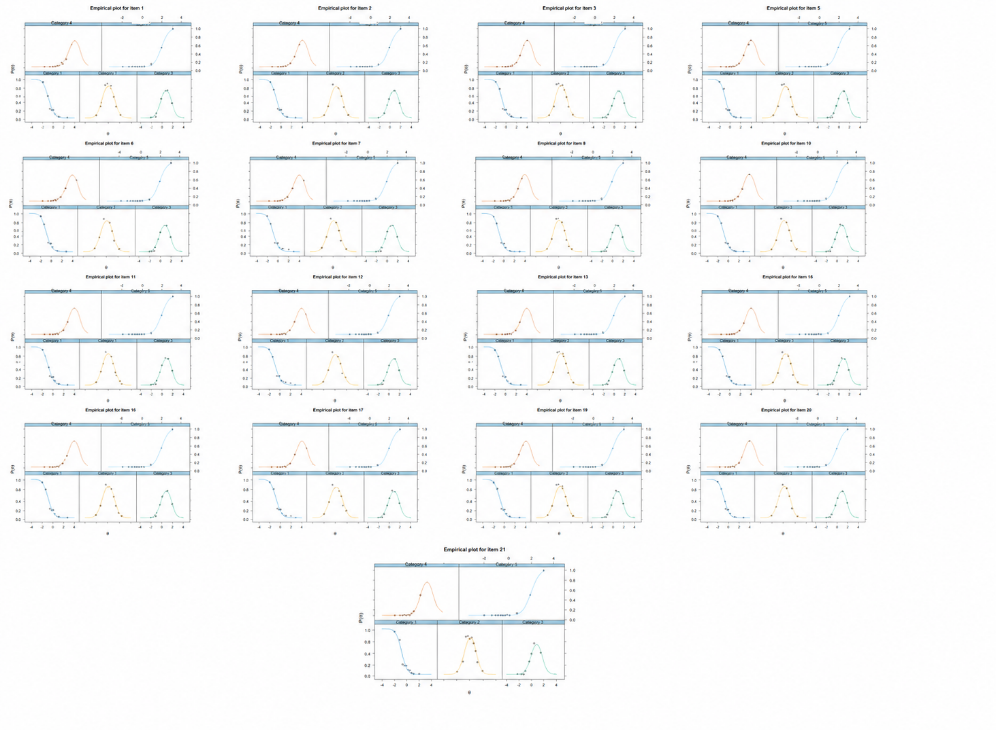
Ajuste por persona
El ajuste por persona del modelo GRM para el constructo Metodología permitió identificar los patrones de respuesta con mayor desviación respecto a lo esperado por el modelo. Los casos con valores más extremos de Zh presentaron combinaciones heterogéneas de respuestas, es decir, puntuaciones altas en algunos reactivos y bajas en otros dentro del mismo constructo. Este comportamiento se reflejó en valores elevados de outfit e infit, lo que sugiere cierto desajuste individual entre el patrón observado y el patrón esperado por el modelo. Sin embargo, estos resultados no implican necesariamente respuestas inválidas ni justifican la exclusión automática de casos. Dado que el constructo Metodología integra diversos aspectos del proceso de investigación, es posible que algunos participantes reporten mayor dominio en determinadas habilidades metodológicas y menor dominio en otras. Por tanto, los resultados del ajuste por persona deben interpretarse como evidencia diagnóstica exploratoria sobre patrones atípicos de respuesta, y no como un criterio automático para depurar la base de datos.
| Caso | Outfit | z_outfit | Infit | z_infit | Zh |
|---|---|---|---|---|---|
| 46 | 6.2 | 8.6 | 6.14 | 8.35 | -16.68 |
| 352 | 5.22 | 6.21 | 5.04 | 6.09 | -10.53 |
| 361 | 6.06 | 6.01 | 5.59 | 5.84 | -9.66 |
| 488 | 3.92 | 5.44 | 3.87 | 5.24 | -9.53 |
| 441 | 7.13 | 9.18 | 6.06 | 8.7 | -9.42 |
| 197 | 3.95 | 5 | 3.89 | 4.93 | -8.45 |
| 372 | 3.47 | 4.79 | 3.6 | 4.84 | -7.52 |
| 75 | 3.4 | 4.91 | 3.45 | 4.95 | -7.42 |
| 207 | 4.81 | 4.98 | 5.12 | 5.41 | -7.19 |
| 433 | 3.22 | 4.51 | 3.07 | 4.19 | -7.09 |
| 673 | 3.2 | 4.49 | 3.07 | 4.19 | -7.01 |
| 192 | 3.55 | 4.18 | 3.58 | 4.3 | -6.86 |
| 515 | 3.04 | 4.09 | 2.89 | 4.01 | -6.79 |
| 528 | 2.83 | 4.18 | 2.95 | 4.32 | -6.38 |
| 708 | 3.24 | 4.1 | 3.04 | 3.87 | -6.34 |
| 14 | 3 | 3.81 | 3.02 | 3.9 | -5.92 |
| 526 | 3.37 | 4.03 | 2.9 | 3.52 | -5.7 |
| 100 | 2.66 | 3.34 | 2.63 | 3.32 | -5.53 |
| 677 | 2.94 | 3.77 | 2.84 | 3.68 | -5.41 |
| 109 | 2.73 | 4.13 | 2.55 | 3.74 | -5.38 |
Curva de información del ítem (IIF)
La curva de información del ítem del modelo GRM para el constructo Metodología mostró que los reactivos aportan mayor precisión en un rango amplio del continuo latente, aproximadamente entre θ = -2 y θ = 3.5. Los ítems con mayor aporte informativo fueron aquellos con discriminaciones más elevadas, principalmente Item22 (a1 = 3.371), Item26 (a1 = 3.346), Item18 (a1 = 3.308), Item27 (a1 = 3.271), Item21 (a1 = 3.218) e Item19 (a1 = 3.187). Esto indica que dichos reactivos son especialmente útiles para diferenciar niveles cercanos de habilidad metodológica. En contraste, los ítems Item29 (a1 = 1.924) e Item33 (a1 = 2.026) aportaron menor información relativa, aunque todavía mantienen capacidad discriminativa adecuada. En conjunto, los resultados sugieren que los ítems de Metodología ofrecen mayor precisión en niveles bajos, medios y medio-altos del rasgo, mientras que la información disminuye en los extremos del continuo, especialmente por debajo de θ = -3 y por encima de θ = 4.
| Item | a1 | d1 | d2 | d3 | d4 |
|---|---|---|---|---|---|
| Item16 | 2.559 | 4.227 | -0.149 | -3.725 | -6.867 |
| Item17 | 2.996 | 4.159 | -0.536 | -4.219 | -8.285 |
| Item18 | 3.308 | 3.785 | -1.371 | -5.059 | -9.208 |
| Item19 | 3.187 | 4.288 | -0.313 | -4.312 | -8.386 |
| Item20 | 2.612 | 4.072 | 0.344 | -2.705 | -6.057 |
| Item21 | 3.218 | 4.070 | -0.447 | -3.900 | -7.625 |
| Item22 | 3.371 | 3.932 | -1.042 | -4.812 | -8.756 |
| Item23 | 2.730 | 4.033 | 0.149 | -3.150 | -6.720 |
| Item24 | 2.793 | 5.081 | 0.587 | -3.254 | -6.191 |
| Item25 | 2.434 | 4.560 | 0.349 | -3.213 | -5.923 |
| Item26 | 3.346 | 5.682 | 0.393 | -3.640 | -7.635 |
| Item27 | 3.271 | 4.584 | -0.216 | -4.236 | -8.390 |
| Item28 | 2.782 | 4.775 | 0.194 | -3.285 | -7.127 |
| Item29 | 1.924 | 1.759 | -1.809 | -4.245 | -7.347 |
| Item30 | 2.765 | 4.014 | -0.384 | -3.928 | -7.380 |
| Item31 | 3.106 | 3.733 | -0.901 | -4.879 | -8.968 |
| Item32 | 2.453 | 3.944 | -0.353 | -3.603 | -6.014 |
| Item33 | 2.026 | 1.515 | -1.642 | -3.657 | -6.910 |
| Item34 | 2.357 | 2.380 | -1.093 | -3.540 | -6.345 |
| Item35 | 2.472 | 2.290 | -1.232 | -3.697 | -6.797 |
| Item36 | 2.699 | 2.164 | -1.972 | -4.953 | -8.543 |
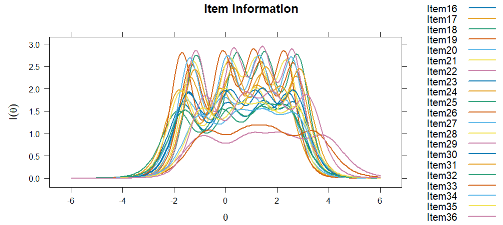
Curva de información del test (TIF) y Curva de error estándar (SEC)
La curva de información del test del modelo GRM para el constructo Metodología muestra que el instrumento alcanza su mayor precisión en un rango amplio del rasgo latente, aproximadamente entre θ = -2 y θ = 3. En esta zona, la información del test es elevada y el error estándar de medición se mantiene bajo, lo que indica que el modelo estima con mayor precisión a los participantes con niveles bajos, medios y medio-altos de habilidad metodológica. La información disminuye en los extremos del continuo, especialmente por debajo de θ = -3 y por encima de θ = 4, donde el error estándar aumenta. En conjunto, la TIF y la SEC indican que el constructo Metodología presenta buena precisión de medida en la zona central y media-alta del rasgo, pero menor precisión para participantes con niveles extremadamente bajos o altos.
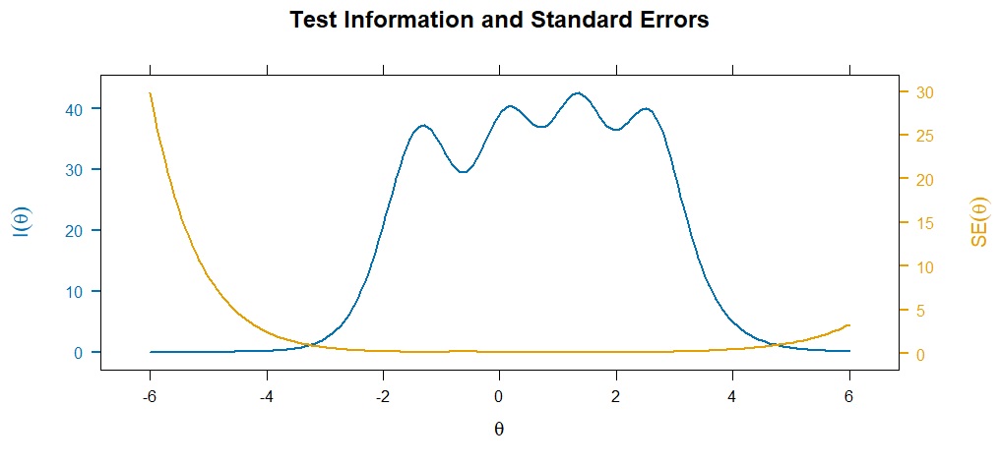
Estimación referencial de habilidades latentes
Una vez calibrado el modelo GRM del constructo Método, se estimaron de manera referencial las habilidades latentes de los participantes mediante el método EAP. Para fines descriptivos, estas habilidades se clasificaron mediante un baremo teórico de la escala θ: muy bajo (θ < -2), básico (-2 ≤ θ < -1), intermedio bajo (-1 ≤ θ < -0.5), intermedio (-0.5 ≤ θ ≤ 0.5), intermedio alto (0.5 < θ ≤ 1), bueno (1 < θ ≤ 1.5) y avanzado (θ > 1.5). Esta clasificación debe interpretarse como una aproximación descriptiva del modelo calibrado, no como una clasificación diagnóstica definitiva.
Las habilidades latentes estimadas mediante EAP se distribuyeron alrededor del centro de la escala θ, con una media cercana a cero (M = 0.000) y una dispersión próxima a una unidad estándar (DE = 0.976). El error estándar promedio fue moderado-bajo (M_SE = 0.214), lo que sugiere una precisión adecuada en la estimación de las puntuaciones latentes. En términos descriptivos, la mayor proporción de participantes se ubicó en el nivel intermedio (40.9%), seguida de los niveles intermedio alto (15.1%), intermedio bajo (13.7%) y básico (13.2%). Una proporción menor se concentró en los niveles bueno (8.3%), avanzado (5.4%) y muy bajo (3.5%). En conjunto, los resultados sugieren que el modelo organiza principalmente a los participantes en niveles intermedios del constructo Método, con menor presencia de perfiles extremos.
| n | Media θ | DE θ | Mínimo θ | Máximo θ | Media SE | Muy bajo | Básico | Intermedio bajo | Intermedio | Intermedio alto | Bueno | Avanzado |
|---|---|---|---|---|---|---|---|---|---|---|---|---|
| 722 | 0.001 | 0.986 | -2.71 | 3.11 | 0.169 | 16 (2.2%) | 89 (12.3%) | 124 (17.2%) | 266 (36.8%) | 130 (18.0%) | 52 (7.2%) | 45 (6.2%) |
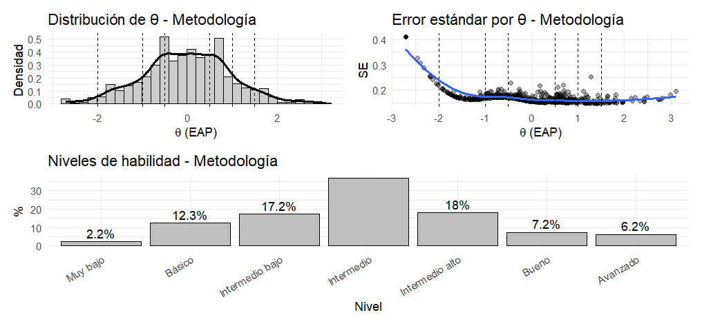
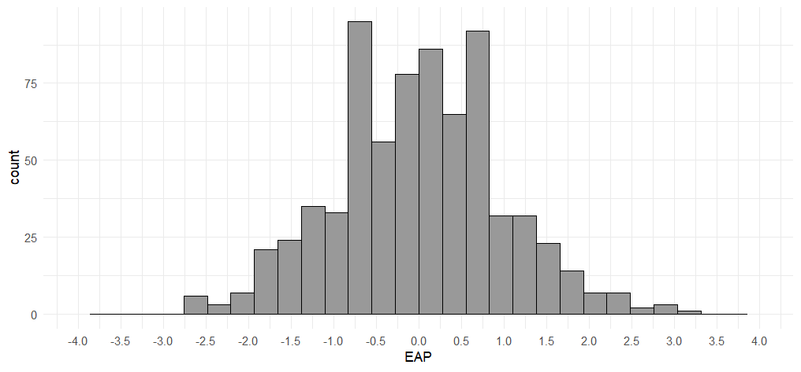
Distribución posterior del rasgo latente
La distribución posterior del rasgo latente para el constructo Metodología muestra una forma aproximadamente unimodal y centrada alrededor de θ = 0, lo que indica que la mayor concentración de participantes se ubica en niveles medios de habilidad metodológica. La densidad disminuye progresivamente hacia los extremos del continuo, con menor presencia de participantes en niveles muy bajos o muy altos. Este patrón es coherente con la distribución de habilidades EAP reportada previamente, donde la mayoría de los casos se ubicó en niveles intermedios. En conjunto, la distribución posterior sugiere que el modelo organiza adecuadamente a los participantes alrededor del nivel promedio del constructo, con menor frecuencia de perfiles extremos.
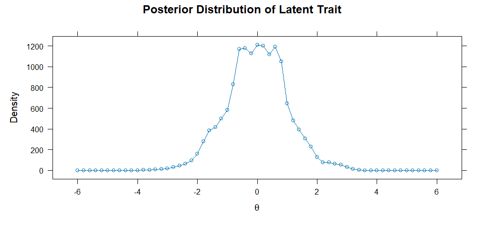
Evaluación del ajuste persona-ítem mediante Wright Map
El Wright Map del constructo Metodología muestra una correspondencia razonable entre la distribución de los participantes y la localización de los umbrales de los ítems en la escala logit. La mayor concentración de participantes se ubica alrededor de la zona media del rasgo latente, aproximadamente entre θ = -1.5 y θ = 1.5, lo que coincide con la zona donde se localiza una parte importante de los umbrales b1, b2 y b3. Esto sugiere que los ítems están adecuadamente dirigidos a los niveles bajos, medios y medio-altos de habilidad metodológica.
Los umbrales b1 se ubican principalmente en niveles bajos del rasgo, por lo que permiten diferenciar a participantes con menor dominio metodológico. Los umbrales b2 se concentran cerca de la zona media, mientras que los b3 se localizan en niveles medio-altos. Finalmente, los umbrales b4 se ubican en niveles altos, lo que indica que seleccionar las categorías superiores requiere un mayor nivel de habilidad metodológica. En conjunto, el mapa muestra que el constructo cubre un rango amplio del continuo latente, aunque la medición parece ser menos precisa en los extremos, especialmente en niveles muy altos o muy bajos donde hay menos participantes y menor densidad de umbrales.
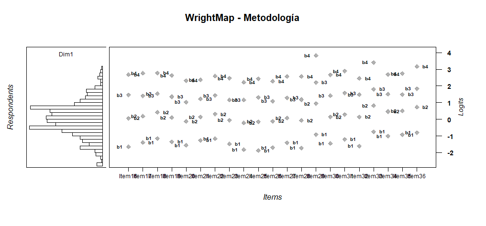
Fiabilidad
La fiabilidad marginal del modelo GRM para el constructo Metodología fue elevada (rxx = .971), lo que indica una alta precisión general en la estimación del rasgo latente. La curva muestra que la fiabilidad se mantiene en niveles muy altos en un rango amplio del continuo, aproximadamente entre θ = -2.5 y θ = 4, donde alcanza valores cercanos o superiores a .90. En contraste, la fiabilidad disminuye en los extremos muy bajos y muy altos del rasgo, especialmente por debajo de θ = -4 y por encima de θ = 5, lo cual es esperable debido a la menor información disponible en esas zonas. En conjunto, los resultados sugieren que el modelo estima con muy buena precisión los niveles bajos-medios, medios y altos del constructo Metodología, aunque con menor precisión en los extremos del continuo.
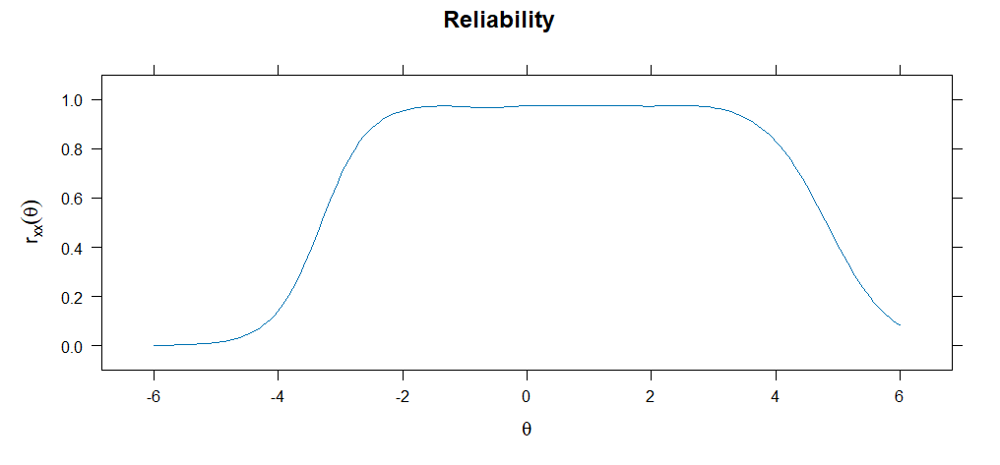